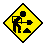

✦
Welcome to bruh.ae *LIVE* • Website by Adam
✎
A few things to mention
- Inspired by early-2000s personal pages, reinterpreted with a male-leaning palette and textures.
- Static-first. Accessible. Vanilla JS for small, era-appropriate niceties.
- Looking to trade links or join a webring? Hit the guestbook.
★
Featured
